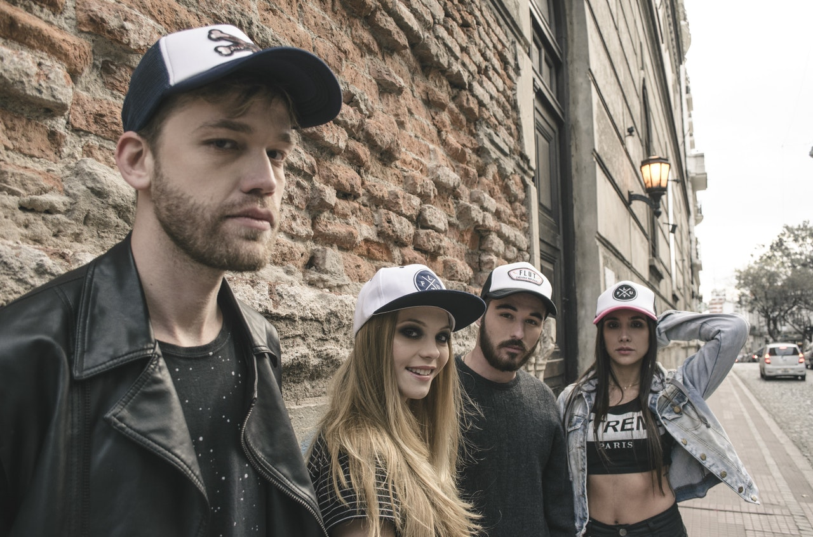

Bio
The Wiggles are an Australian children's music group formed in Sydney, New South Wales, in 1991. Since 2012, the group members are Anthony Field, Lachlan Gillespie, Simon Pryce, and Emma Watkins. The original members were Field, Phillip Wilcher, Murray Cook, Greg Page, and Jeff Fatt. Wilcher left the group after their first album. Page retired in 2006 due to ill health and was replaced by understudy Sam Moran, but returned in 2012, replacing Moran. At the end of 2012, Page, Cook, and Fatt retired, and were replaced by Gillespie, Pryce, and Watkins. Cook and Fatt retained their shareholding in the group and all three continued to have input into its creative and production aspects.
Field and Fatt were members of the Australian pop band The Cockroaches in the 1980s, and Cook was a member of several bands before meeting Field and Page at Macquarie University, where they were studying to become pre-school teachers. In 1991, Field was inspired to create an album of children's music based upon concepts of early childhood education, and enlisted Cook, Page, and Fatt to assist him. They began touring to promote the album, and became so successful, they quit their teaching jobs to perform full-time. The group augmented their act with animal characters Dorothy the Dinosaur, Henry the Octopus, and Wags the Dog, as well as the character Captain Feathersword, played by Paul Paddick since 1993. They travelled with a small group of dancers, which later grew into a larger troupe. The group's DVDs, CDs, and television programs have been produced independently since their inception. Their high point came in the early 2000s, after they broke into the American market.
Audio
Upcoming Gigs
- 23 August @ Metropolis
- 24 August @ The Roxy
- 25 August @ The Patch
Contact Us
Call Joe on 0414 123 456 or you can send us an email.